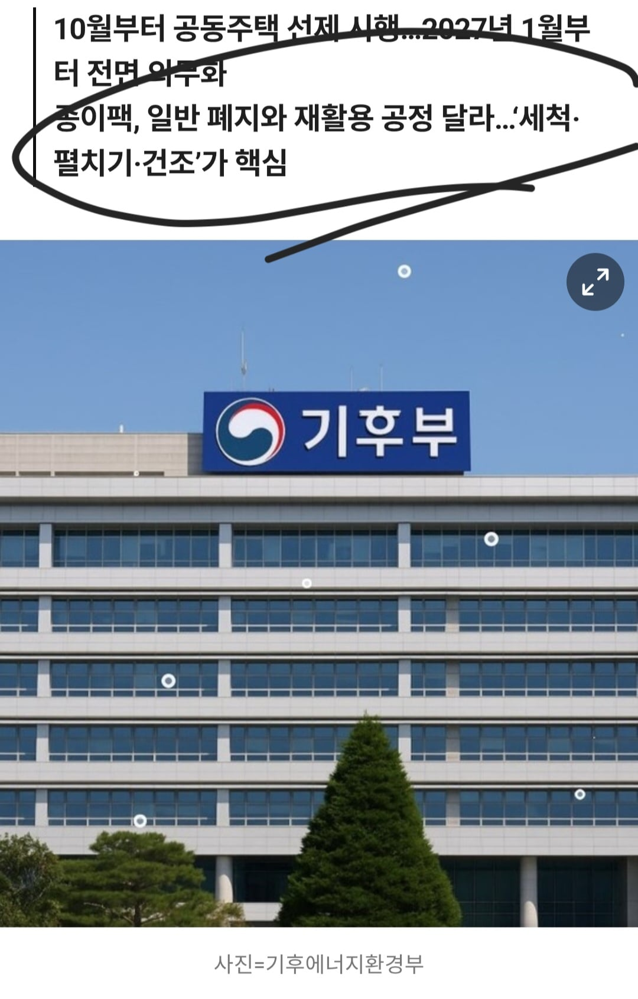

내년 1월부터 시행되는 우유팩 분리수거 규제
다 먹은 우유팩을 씻어서 > 잘라서 펼치고 > 말린 후에 종이와 따로 분리배출
우리나라만큼 분리수거 철저히 따르는 나라가 얼마나 되나 시발
우리집만해도 페트 종이 유리 음식물 일반 캔 비닐 이렇게 7종 싹 다 따로 버리는데 심지어 페트는 라벨지에 뚜껑까지 따로 버리고 염병을 하는데 또 규제한다고?

내년 1월부터 시행되는 우유팩 분리수거 규제
다 먹은 우유팩을 씻어서 > 잘라서 펼치고 > 말린 후에 종이와 따로 분리배출
우리나라만큼 분리수거 철저히 따르는 나라가 얼마나 되나 시발
우리집만해도 페트 종이 유리 음식물 일반 캔 비닐 이렇게 7종 싹 다 따로 버리는데 심지어 페트는 라벨지에 뚜껑까지 따로 버리고 염병을 하는데 또 규제한다고?
플라스틱우유통먹기
국산종이우유안쳐먹어ㅛㅣ발련아 그래 믈레코비타나 먹어두마
지랄좀 하지마 이 씨발새끼들아
ㅋㅋㅋ 왜케 화났어 ㅋㅋㅋ
지랄시나이데. 분리하면 뭐하냐 섞어수거 하는데.
응~ 안처먹고말아
300세대 이상이자나?
우유를 먹지 말아야겠다
플라스틱이나 병우유가 나오고 가격상승